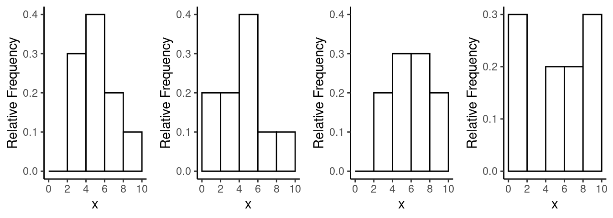
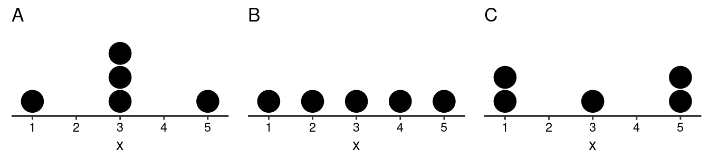
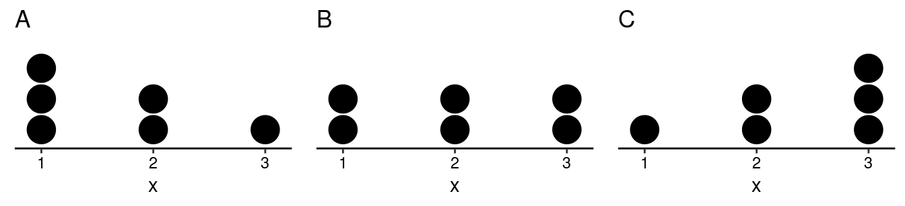
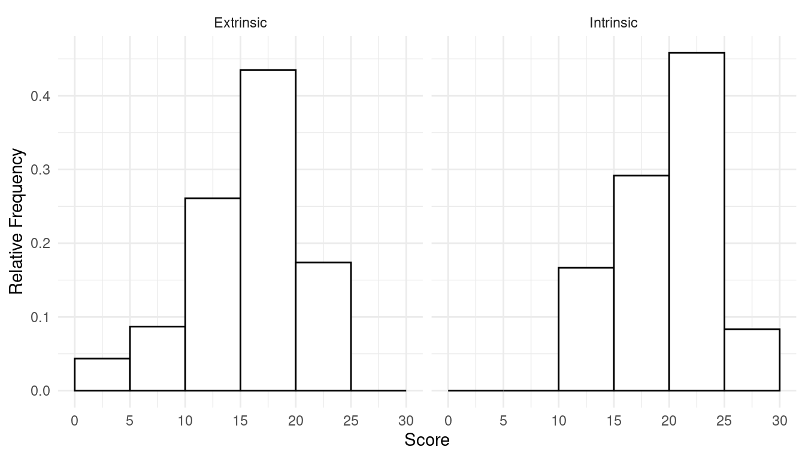

You can also download a PDF copy of this homework assignment.
The purpose of these homework problems is to help check your understanding of the description of the distribution of a quantitative variable and its representation/summarization through the use of histograms, dot plots, means, variances, and standard deviations. Note that in some problems the answers are given and you are asked to confirm or verify the answer. In these problems you should attempt to arrive at the same answer. The solutions to other problems are given at the end.
1.\(\!\) Consider the following set of 10 observations of a quantitative variable.
2, 3, 4, 4, 4, 5, 5, 6, 6, 6
Construct a table that summarizes the distribution with columns for frequency, relative frequency, and cumulative relative frequency.
2.\(\!\) The distribution of a set of 10 observations of a quantitative variable is described by the table below.
| \(x\) | Frequency | Relative Frequency | Cumulative Relative Frequency |
|---|---|---|---|
| 1 | 1 | 0.1 | 0.1 |
| 2 | 3 | 0.3 | 0.4 |
| 3 | 2 | 0.2 | 0.6 |
| 4 | 2 | 0.2 | 0.8 |
| 5 | 2 | 0.2 | 1.0 |
Give the original set of 10 observations of the variable.
1.\(\!\) In lecture we discussed data from a study that investigated a relationship between extrinsic versus intrinsic motivation and creativity. When I presented this data set in lecture I simplified it slightly by rounding the poem scores. Here I will present the actual data. The poem scores for the students who were primed with extrinsic motivation are as follows:
5, 5.4, 6.1, 10.9, 11.8, 12, 12.3, 14.8, 15, 16.8, 17.2, 17.2, 17.4, 17.5, 18.5, 18.7, 18.7, 19.2, 19.5, 20.7, 21.2, 22.1, 24
The poem scores for the students who were primed with intrinsic motivation are as follows:
12, 12, 12.9, 13.6, 16.6, 17.2, 17.5, 18.2, 19.1, 19.3, 19.8, 20.3, 20.5, 20.6, 21.3, 21.6, 22.1, 22.2, 22.6, 23.1, 24, 24.3, 26.7, 29.7
For your convenience the observations have been sorted in increasing order. Construct two histograms — one for each set of observations — using relative frequency. For your histograms use intervals that are 5 units wide and start at 0 (i.e., 0 to 5, 5 to 10, 10 to 15, etc). For any observations that are “on the border” between two intervals (e.g., 5), put that observation in the lower interval (e.g., a 5 would go in the interval 0 to 5, not the interval 5 to 10).
2.\(\!\) Consider the following four sets of observations of a quantitative variable \(x\). For your convenience the observations have been sorted in increasing order.
Match each set of observations to the corresponding histogram below.

1.\(\!\) The three dot plots below each show the distribution of several observations of a quantitative variable \(x\). Note that the values of the variable are 1, 2, 3, 4, or 5.  Confirm that all three distributions have a mean of 3. Also confirm that the variances of distributions A, B, and C are 2, 2.5, and 4, respectively, and that the standard deviations of distributions A, B, and C are (approximately) 1.4, 1.6, and 2, respectively.
2.\(\!\) The three dot plots below each show the distribution of several observations of a quantitative variable \(x\). Note that the values of the variable are 1, 2, or 3.  Confirm that the means of distributions A, B, and C are (approximately) 1.7, 2, and 2.3, respectively. Also confirm that distributions A and C both have standard deviations of approximately 0.8, while distribution B has a slightly larger standard deviation of approximately 0.9.
3.\(\!\) Create a sample of \(n\) = 5 observations of a quantitative variable \(x\), where each observation has a value of 1, 2, 3, 4, or 5, such that the sample has a mean of \(\bar{x}\) = 2 and a variance of zero. Create another sample where the mean is also \(\bar{x}\) = 2 but the variance is greater than zero. (Hint: For both problems it might be helpful to consider that if you made a dot plot it would need to have a center of mass at the mean. You might find it useful to help visualize the solution.)
4.\(\!\) Consider the following distribution.| \(x\) | Relative Frequency |
|---|---|
| 0 | 0.2 |
| 1 | 0.5 |
| 2 | 0.2 |
| 3 | 0.1 |
Confirm that the mean is \(\bar{x}\) = 1.2.
5.\(\!\) A sample includes several observations of a quantitative variable \(x\). In this sample 10% of the observations have a value of \(x\) = 1, 30% of the observations have a value of \(x = 2\), and 60% observations have a value of \(x\) = 3. Verify that the mean for this sample is \(\bar{x}\) = 2.5. (Hint: Note that the percentages of 10%, 30%, and 60% correspond to relative frequencies of 0.1, 0.3, and 0.6, respectively.)
6.\(\!\) A sample includes \(n\) = 100 observations of a quantitative variable \(x\). Of these observations, \(x\) = 1 for 60 observations, and \(x\) = 2 for 40 observations. Verify that the mean of \(x\) is \(\bar{x}\) = 1.4.
The solutions for the tabular representation of distributions and histogram problems are given below.
| \(x\) | Frequency | Relative Frequency | Cumulative Relative Frequency |
|---|---|---|---|
| 2 | 1 | 0.1 | 0.1 |
| 3 | 1 | 0.1 | 0.2 |
| 4 | 3 | 0.3 | 0.5 |
| 5 | 2 | 0.2 | 0.7 |
| 6 | 3 | 0.3 | 1.0 |
2.\(\!\) The original observations (sorted in increasing order) are 1, 2, 2, 2, 3, 3, 4, 4, 5, 5.
1.\(\!\) The histograms are shown below. 